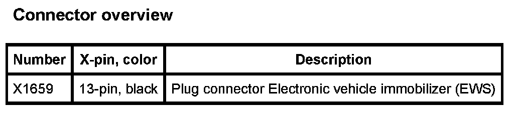

Operation CHARM
: Car repair manuals for everyone.
Home
>>
BMW
>>
2007
>>
X3 3.0si (E83) L6-3.0L (N52K)
>>
Repair and Diagnosis
>>
Diagrams
>>
Connector Views
>>
Alarm Module, (Vehicle Antitheft)
Alarm Module, (Vehicle Antitheft)
A836 Electronic Vehicle Immobilizer (EWS):
